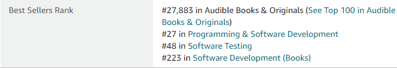
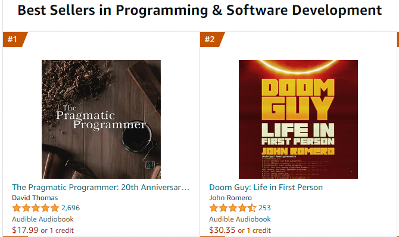
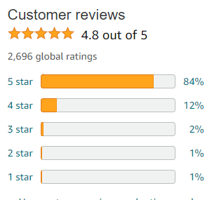
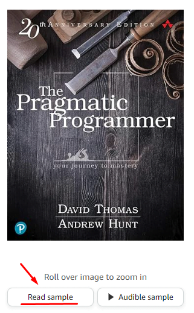
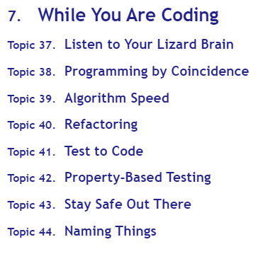
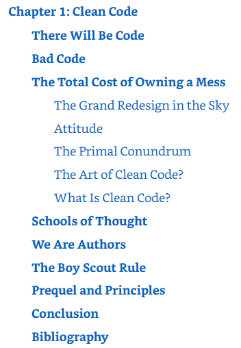
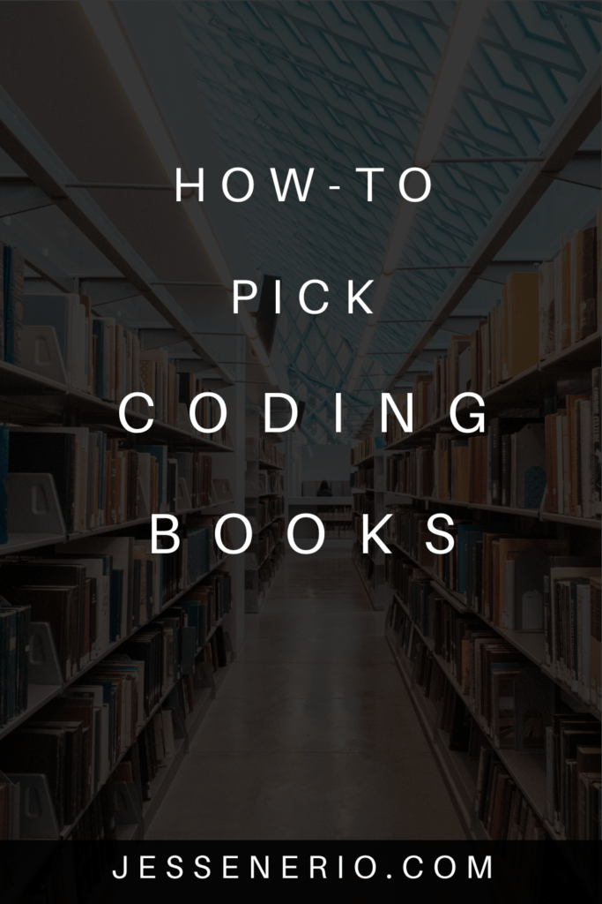
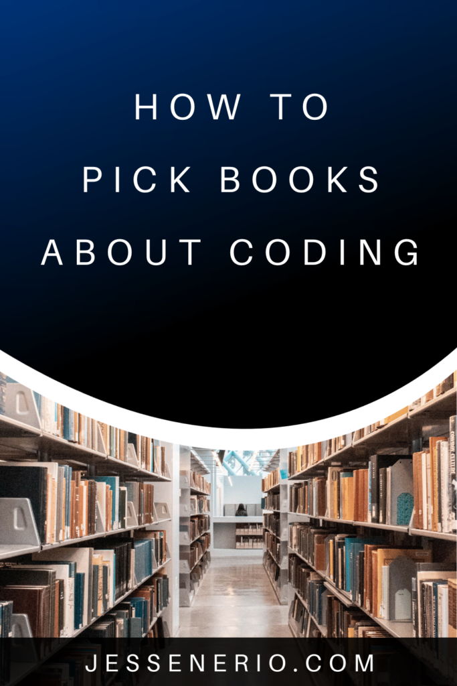

Choosing the right book can make or break the goal you have in seeking a read. The author is trying to change the readers perspective or widen their understanding of a topic. Some authors are great at this and some are not. Having a system for your book choices, is a smart way of habitually choosing the best books.
Create a Vision & Pick a Topic
There should be a vision of your future self after reading the book. Will you understand the life of Elon Musk better than 90% of your peers? Is Javascript just much easier to understand after reading that coding textbook? Did your learning ability improve after reading a learn to learn book?
This vision should guide you in your purchase and motivate you to seek out the right author and their most perfect book, at least the one you know at the time. So, yes, pick a topic according to the vision
Use Top Listings for Book Rankings
Each book/topic has a top listing on Amazon. Pick a book you are familiar with and check the sellers rankings. Here are the rankings for "Clean Code" by Robert Martin:
You can click a rank listing and see which books are ranked higher than Clean Code. Here is Programming & Software Development:
Apparently, "The Pragmatic Programmer" is very popular right now. It seems it would be a good read. This can be done for any topic at any time. This selection process of picking familiar books and seeing their rankings is invaluable.
Check the Ratings
Once you have found a book, check the ratings. Here are the ratings for "Pragmatic Programmer":
Anything above 75% is pretty good, so, this one is darn good. It is also good to look at the number of ratings. If the rating count is very high and the 5-star ratio is high, you got yourself a golden book.
Here is Clean Code, for your reference:

To be fair Robert Martin's Clean Code is more of a workbook rather than a passive read. Because of the 5k+ rankings and fact that it requires work (usually gives lower rankings) I would still say Clean Code is better.
Check the table of contents
Okay, at this point I would not buy a book yet. The next thing to do, if we were comparing "Pragmatic Programmer" and "Clean Code" is check the contents. I will check the contents now. You can do so by clicking here:
For me, honestly, nothing in "Pragmatic Programmer" seemed interesting besides this part:
Now let us check "Clean Code":
And wow, after a quick glance I can tell Clean Code is superior to Pragmatic Programmer in general content. I checked the entire table of contents and feel Clean Code would be a better investment and would potentially buy it.
Do This With More Books
At this point, I would widen my search with this process and see what the current literature on my topic of coding is like, basically repeating this until I find a book I am most compelled to buy.
Anywho, I hope you learned something!
Happy coding!
Resources
"Clean Code" book:
"Pragmatic Programmer" book:
 